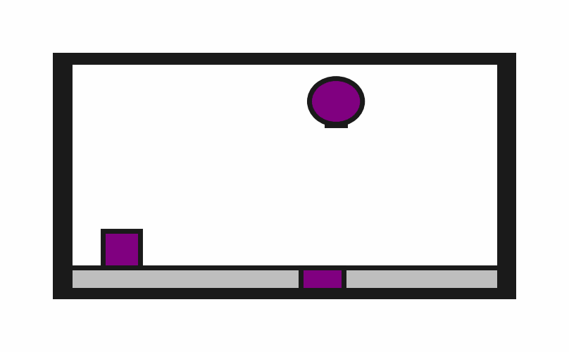

prbench/Obstruction2D-o0-v0

Description
A 2D environment where the goal is to place a target block onto a target surface. The block must be completely contained within the surface boundaries.
The robot has a movable circular base and a retractable arm with a rectangular vacuum end effector. Objects can be grasped and ungrasped when the end effector makes contact.
Initial State Distribution
Example Demonstration
Observation Space
The entries of an array in this Box space correspond to the following object features:
| Index | Object | Feature |
|---|---|---|
| 0 | robot | x |
| 1 | robot | y |
| 2 | robot | theta |
| 3 | robot | base_radius |
| 4 | robot | arm_joint |
| 5 | robot | arm_length |
| 6 | robot | vacuum |
| 7 | robot | gripper_height |
| 8 | robot | gripper_width |
| 9 | target_surface | x |
| 10 | target_surface | y |
| 11 | target_surface | theta |
| 12 | target_surface | static |
| 13 | target_surface | color_r |
| 14 | target_surface | color_g |
| 15 | target_surface | color_b |
| 16 | target_surface | z_order |
| 17 | target_surface | width |
| 18 | target_surface | height |
| 19 | target_block | x |
| 20 | target_block | y |
| 21 | target_block | theta |
| 22 | target_block | static |
| 23 | target_block | color_r |
| 24 | target_block | color_g |
| 25 | target_block | color_b |
| 26 | target_block | z_order |
| 27 | target_block | width |
| 28 | target_block | height |
Action Space
The entries of an array in this Box space correspond to the following action features:
| Index | Feature | Description | Min | Max |
|---|---|---|---|---|
| 0 | dx | Change in robot x position (positive is right) | -0.050 | 0.050 |
| 1 | dy | Change in robot y position (positive is up) | -0.050 | 0.050 |
| 2 | dtheta | Change in robot angle in radians (positive is ccw) | -0.196 | 0.196 |
| 3 | darm | Change in robot arm length (positive is out) | -0.100 | 0.100 |
| 4 | vac | Directly sets the vacuum (0.0 is off, 1.0 is on) | 0.000 | 1.000 |
Rewards
A penalty of -1.0 is given at every time step until termination, which occurs when the target block is "on" the target surface. The definition of "on" is given below:
def is_on(
state: ObjectCentricState,
top: Object,
bottom: Object,
static_object_cache: dict[Object, MultiBody2D],
tol: float = 0.025,
) -> bool:
"""Checks top object is completely on the bottom one.
Only rectangles are currently supported.
Assumes that "up" is positive y.
"""
top_geom = rectangle_object_to_geom(state, top, static_object_cache)
bottom_geom = rectangle_object_to_geom(state, bottom, static_object_cache)
# The bottom-most vertices of top_geom should be contained within the bottom
# geom when those vertices are offset by tol.
sorted_vertices = sorted(top_geom.vertices, key=lambda v: v[1])
for x, y in sorted_vertices[:2]:
offset_y = y - tol
if not bottom_geom.contains_point(x, offset_y):
return False
return True
References
Similar environments have been used many times, especially in the task and motion planning literature. We took inspiration especially from the "1D Continuous TAMP" environment in PDDLStream.